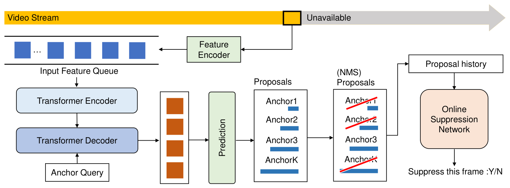
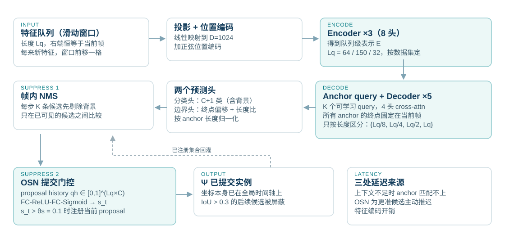

能拿到一套「固定终点多尺度 anchor 解码 + 帧内 NMS + 提交门控」的在线实例生成器；代价是窗口左界截断，长于窗口的实例起点无法被正确定位。
- 最小可复用件
- Online Suppression Network：把最近 \(L_{q}\) 步、按类分列的动作置信度表喂给 FC-ReLU-FC-Sigmoid，输出该步是否作为提交时刻。
- 主要风险
- 窗口边界效应。anchor 终点钉在最新输入帧，起点最远只能到窗口左界，超出部分被静默截断。
- 复现门槛
- 逐帧预训练特征（TSN/I3D）+ 带起止与类别的实例级标注；单张 RTX 2080 Ti 量级即可，论文报告 70.5 fps。
1. 核心摘要
Online Temporal Action Localization（On-TAL）要求在流式视频中直接输出带类别与起止时间的动作实例，并且已生成的 proposal 不得被后续帧修改或删除。此前 Kang 等人的 CAG-QIL 走「逐帧 Online Action Detection 概率再分组」路线，实例级监督缺失，在非动作帧概率冒尖、动作中段概率下滑、连续同类别动作相邻时会分别产生短碎片、断裂实例与合并实例。OAT（Online Anchor Transformer）回到滑动窗口：长 \(L_{q}\) 的特征队列过 transformer encoder，再由 \(K\) 个终点固定在当前时刻、长度不同的 anchor query 经 decoder 一次解码出 \(K\) 条完整实例并回归边界。重复提交由 Online Suppression Network（OSN）处理，它只看置信度历史，逼近离线 NMS 的选择行为。判定：这是「在线 proposal 生成 + 提交门控」最直接的工程参考，窗口边界效应则是结构性缺陷，调参消不掉。
2. 事件流水线定位
该工作落在边界定位：类别、起点、终点由同一组 anchor 头联合给出，不把「这段是不是某动作」拆成独立阶段。记忆写入只标为部分命中，是因为 OSN 的 proposal history 已是 pending 与 committed 分层的雏形——置信度先进历史表，被门控选中才写入不可变集合 \(\Psi\)，而该集合只有追加，没有淘汰与检索接口。上游假设特征已算好、可按固定帧率入队；下游假设消费者接受绝对时间坐标并容忍一个窗口量级的延迟。
| 环节 | 内容 |
|---|---|
| 输入 | 每帧经预训练编码器得到的特征向量，串行入长 \(L_{q}\) 的队列，未填满处补零 |
| 输出 | 每个时间步 \(K\) 条 \((start, end, class)\) proposal，坐标已落在全局时间轴上 |
| 交给下游 | 经 OSN 门控后追加进不可变实例集合 \(\Psi\) 的条目；未通过门控的候选直接丢弃 |
3. 问题与动机
On-TAL 相对离线 TAL 多两条硬约束：不能访问未来帧；已生成的 proposal 不允许修改。后者废掉标准后处理——离线可对全片候选做一次 NMS，在线只能基于当前已生成的候选决策。
由约束推出的最省事路线是拿 OAD 骨干的逐帧概率再分组。非动作帧上概率偶发高值，就切出一段与真值无关的极短实例（tick）；动作中段概率下滑，一个真值实例被切成几段（fragmentation）；两个同类别动作紧邻时，分组判断不了中间空档归谁，于是并成一条（merge）。三类错误同源：分组拿不到实例级监督，只能对逐帧证据做事后拼装。
作者的另一点动机与精度无关而与响应速度有关：anchor 解码可以在动作结束前提出实例——anchor 终点固定在当前帧、长度靠回归预测，而 OAD 分组必须等模型自己判定动作结束。为让这个差别可度量，论文提出 Average Early Detected Time（AEDT），定义为真阳性 proposal 的生成时刻减去真值动作结束时刻的平均值，取负表示提前提交。
| 维度 | CAG-QIL | OAT |
|---|---|---|
| 提交机制 | 逐帧 OAD 概率经 context-aware actionness grouping 汇总，分组过程建模为马尔可夫决策过程，逐步决定何时封口 | \(K\) 条固定终点 anchor 直接回归整实例；单帧内先 NMS，再交由 OSN 决定该帧是否写入 |
| 是否可回改 | 否，封口即定稿 | 否，写入 \(\Psi\) 即定稿；可在提交前用窗口内候选与置信度历史把决策往后拖 |
| 是否需要 RL / 模仿学习 | 需要，MDP 用模仿学习训练 | 不需要，主网络为交叉熵加 L1 的纯监督，OSN 用二元交叉熵单独训练 |
| 典型失败模式 | tick、fragmentation、merge 三类分组错误 | 动作起始段上下文不足时整窗判背景；长于窗口的实例起点被截断；OSN 只是 NMS 的近似，可能提前写入质量次优的候选 |
4. 方法拆解

Figure 2：灰色区表示尚未到达的帧；当前窗口内的 \(K\) 个 anchor 各生成一条候选，经帧内 NMS 后由 OSN 判断是否提交。

Figure 2：窗口右端固定在当前帧，候选依次经过边界回归、帧内去重和 OSN 提交；下方标出上下文、门控与编码造成的延迟。（示意）
4.1 输入与时间表征
每 \(k\) 个连续原始帧经预训练特征编码器压成一个特征向量，按时间串行进入长度 \(L_{q}\) 的队列，未填满处补零。每个新特征到达时窗口前移一格，步长就是一个特征步，窗口右端恒等于当前时刻。THUMOS'14 上 \(L_{q}=64\)，按论文报告的 5 fps 折算约 12.8 秒（配置推算）；MUSES 用 \(L_{q}=150\)，BBDB 用 \(L_{q}=32\)。
队列经线性投影到 \(D=1024\) 维、加正弦位置编码，再过 3 个 8 头 encoder block 得到队列级表示 \(E\)。
4.2 关键机制
decoder 有两个输入：可学习的 anchor query \(A\)（\(K\times D\)）与 encoder 输出 \(E\)，经 5 个 4 头 block 输出 \(K\times D\) 的 anchor 表示。与早期 anchor 方法不同，这里不裁剪 anchor 区间再池化到同一形状，而是让 query 用 cross-attention 自取，消融验证了这一替换的收益（见第 5 节）。
anchor 的定义方式是全篇最关键的一处设计：所有 anchor 的终点都固定在最新输入帧，只有长度不同。论文以 \(\{L_q/8,L_q/4,L_q/2,L_q\}\) 举例说明尺度族，实际配置按数据集特化：THUMOS'14 为 \(K=6\)、长度 \(\{4,8,16,32,48,64\}\)；MUSES 为 \(K=7\)、\({4, 9, 18, 37, 75, 112, 150}\)；BBDB 为 \(K=4\)、\({4, 8, 16, 32}\)。训练时把每个 anchor 与真值实例算 IoU，超过 \(\theta_m=0.5\) 即匹配并回归边界，否则置为背景且不做边界回归。
预测模块是两个两层前馈头：分类头输出 \(C+1\) 类（含背景）；边界头输出终点偏移（真值终点与 anchor 终点之差，除以 anchor 长度归一化）与长度比（真值长度与 anchor 长度之比，取对数）。推理时按两式还原实例：
把终点钉在当前帧还有一个训练侧后果：动作刚开始时窗口内几乎没有动作内容，多数 anchor 被判背景，进入中后段才匹配得上。所谓「提前」因此有条件——提前量来自大尺度 anchor 在动作未结束时被判正类，而非对未来帧的推断。
4.3 输出与在线边界
因果性明确：窗口右端是当前时刻，论文未使用任何未来帧，保留的历史长度就是窗口长度 \(L_{q}\)。超出窗口的内容不进入模型，因此没有跨窗口的长期记忆。
去重分两级。第一级在单帧内完成：每步 \(K\) 条候选先剔除背景，再在帧内做 NMS——参与比较的候选都在当前时刻已可见，因此不违反在线约束。第二级跨帧：候选置信度按类分列写入长 \(L_{q}\) 的 proposal history \(q_h\in[0,1]^{L_q\times C}\)，送入 OSN（FC-ReLU-FC-Sigmoid），输出每类的选择概率 \(s \in [0,1]^C\)；\(s\) 超过 \(\theta_s=0.1\) 时当前帧 proposal 被注册进集合 \(\Psi\)，此后与之 IoU 超过 \(\theta_o=0.3\) 的候选一律忽略。
OSN 的监督来自离线 NMS：把 OAT 全部输出拼成输入表，整段跑一次 NMS 得标签，凡在时刻 \(t\) 被选中的就把 \(t-1, t, t+1\) 标为 1，用二元交叉熵训练。它学的是「NMS 会在哪些时刻选最大置信度」，因此只看过去就能逼近一个需要看全片的操作。
窗口内 proposal 到全局实例不需要拼接：anchor 终点是当前时刻，回归出的坐标本身就在全局时间轴上；跨窗口的同一实例由已注册集合与高 IoU 屏蔽消掉。迁移时要留意这个前提——实例已结束或即将结束；若要预测尚未发生的片段，坐标不再自动对齐。
延迟有三处来源：要积累到足够上下文 anchor 才会匹配上；OSN 为等更准的候选主动推迟；特征编码本身的开销。整机 70.5 fps（RTX 2080 Ti），在线执行只要求快过特征帧率（THUMOS'14 为 5 fps、MUSES 0.75 fps、BBDB 1 fps）。
5. 证据与实验
评测集为 THUMOS'14、MUSES 与 BBDB，指标是 tIoU 0.3 至 0.7 的 mAP 与论文自提的 AEDT。作者明确写了 ActivityNet v1.3 不适合 On-TAL（不满足单视频多实例、多类别两个条件），因此本工作在 ActivityNet 上的 mAP 未在已核验的公开材料中确认，本页不给该数字。
Table 1 对比如下（THUMOS'14，mAP %）：
| 方法 | 0.3 | 0.4 | 0.5 | 0.6 | 0.7 |
|---|---|---|---|---|---|
| CAG-QIL | 48.4 | 40.8 | 33.0 | 24.2 | 16.2 |
| OAT-Naive | 57.6 | 50.6 | 43.0 | 30.0 | 15.7 |
| OAT-OSN | 63.0 | 56.7 | 47.1 | 36.3 | 20.0 |
| OAT-NMS（离线后处理） | 69.7 | 64.0 | 53.9 | 42.9 | 27.0 |
同一张表在 MUSES 上 OAT-OSN 为 22.1 / 18.5 / 14.2 / 8.9 / 4.7，BBDB 上为 64.4 / 64.2 / 63.4 / 60.4 / 53.4。Table 2 的 AEDT 显示 OAT-OSN 在 THUMOS'14 各阈值下为 -1.28 至 -1.21 秒，CAG-QIL 仅 -0.11 至 -0.04 秒；MUSES 上 OAT-OSN 为 -17.29 至 -9.53 秒。
把后处理换成整段视频 NMS（OAT-NMS）后，THUMOS'14 的 0.5 阈值 mAP 达到 53.9，与 Table 3 中离线方法 MUSES（56.9）和 ContextLoc（54.3）相差数点；论文据此论证差距主要来自重复候选的控制算法，而非 proposal 本身的质量。Table 5 的消融支持 transformer 解码的必要性：同一滑窗框架下，三段时间池化编码为 42.7（@0.5），卷积编码为 47.4，OAT 为 53.9。
读这些数字要注意 mAP 的口径：它在处理完全部帧后汇总候选再统一计算，无法区分「晚提交但区间正确」与「及时提交」。这正是论文补报 AEDT 的原因，也意味着单凭 mAP 论证在线可用性并不充分。
6. 优点、局限与 VLA 适配
可迁移
固定终点多尺度 anchor 解码（一步回归整实例，不做逐帧拼装）、两级去重（帧内 NMS + 跨帧门控 + 已提交高 IoU 屏蔽）、以及 OSN 本身——输入只是一张按类分列的置信度历史表，参数量在千级。
不成立的前提
On-TAL 提交的是对已发生片段的描述，VLA 要提交的是即将执行的子任务，时间方向相反。anchor 终点钉在当前时刻的设计因此没有直接对应物；OSN 用延迟换精度，在机器人上这个延迟是物理的。
映射到控制循环时，窗口对应「最近 \(L_{q}\) 个控制步的观测与动作 token」，anchor 尺度对应「子任务时长的先验」。若控制频率 10 Hz，\(L_{q}=64\) 只覆盖 6.4 秒，论文的 4/8/16/32/48/64 折算为 0.4 至 6.4 秒子任务，对装配、整理这类几十秒量级的任务不够；照搬会让长技能落到最大 anchor 上，长度回归的归一化分母也失真。可按技能时长分布重设尺度族，或做成两级窗口（短窗高频切换、长窗低频切段）。
窗口边界效应有三条，都是结构性的。其一，起点落在窗口左界之外时只能估到左界附近，误差上界由 \(L_{q}\) 决定，长实例在高 tIoU 上系统性偏低。其二，anchor 终点固定在当前帧，窗口前段只能输出背景，提交时刻被推到动作尾段，与「提前规划」方向相反。其三，控制步与特征步不同频时，anchor 的离散尺度与控制量化误差叠加，边界精度不会优于一个控制步。
最小改造：保留 decoder 与三个回归头，把 anchor 终点改为「当前时刻 + 前瞻 \(h\) 步」，另留一组终点在当前时刻的 anchor 做闭环纠偏；OSN 的历史换成「最近若干次提交的类别、置信度与执行结果」，\(\theta s\) 按任务风险标定而不沿用 0.1。
7. 落地清单
- 复刻两级提交器：先做单帧内 NMS，再用 FC-ReLU-FC-Sigmoid 在置信度历史上做门控，写入后按 IoU 0.3 屏蔽后续候选。
- 用 \(L_{q}=64\)、尺度族 \({4,8,16,32,48,64}\)、\(\theta_m=0.5\)、\(\theta_s=0.1\) 跑通最小版本，确认能在自有数据上重现「提交即不可改」的协议。
- 统计自有任务的动作时长分布，据此重设 anchor 尺度族，并检查最长实例是否超过窗口覆盖范围。
- 把 anchor 终点改为当前时刻加前瞻 \(h\) 步，对照原版测量提交延迟与边界误差的交换关系。
- 同时记录 mAP 与逐次提交的时刻偏差，避免只用汇总 mAP 论证在线可用性。
来源：Young Hwi Kim, Hyolim Kang, Seon Joo Kim, "A Sliding Window Scheme for Online Temporal Action Localization", ECCV 2022, ECVA 正式版 PDF（17 页，https://www.ecva.net/papers/eccv_2022/papers_ECCV/papers/136940640.pdf）；DOI https://doi.org/10.1007/978-3-031-19830-4_37。方法配置取自 3.5 至 3.6 节与第 4.3 节 Implementation Detail，数字取自 Table 1 至 Table 5。
相关页面：CAG-QIL · 逐帧分组的模仿学习路线 · OadTR · 流式 transformer 编码 · MATR · 在线动作检测 · 返回总站